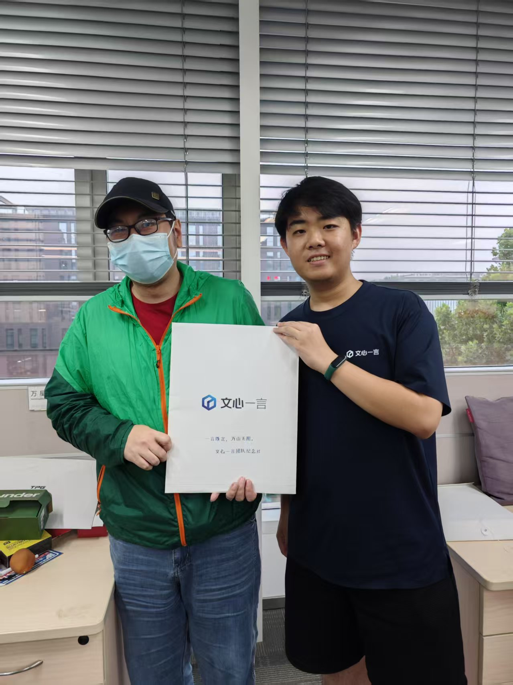
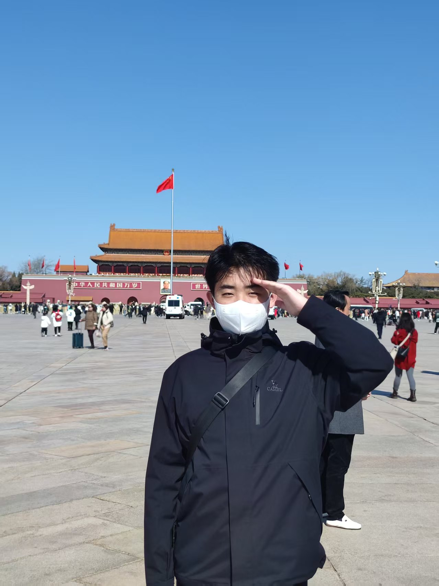

01F
UP
内容能力总览
CONTENT LIFT / SAFE ASCENT
以产品思维组织信息，以内容感知连接人群。
正在寻找产品、品牌策略与新媒体运营方向的机会。
2025.9-2028.7 天津大学 新闻与传播硕士；2021.9-2025.7 北京语言大学 数字媒体技术本科。


CAPABILITIES / METHODS / CURIOSITY
每条路径，都是我处理复杂问题的一种方式。
CHOOSE YOUR ROUTE